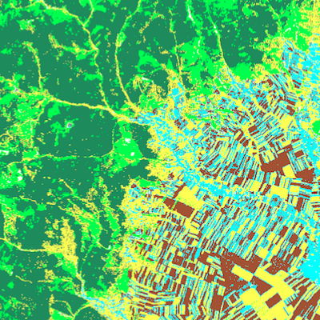

Toggle navigation
Menu
Veronica Plum |
About
Resume
Contact
.
Remote Sensing Projects
This page is a work in progress. Pleasse contact me if you are interested in more information.

Agricultural Fields identified through satelite image processing techniques in Romania.